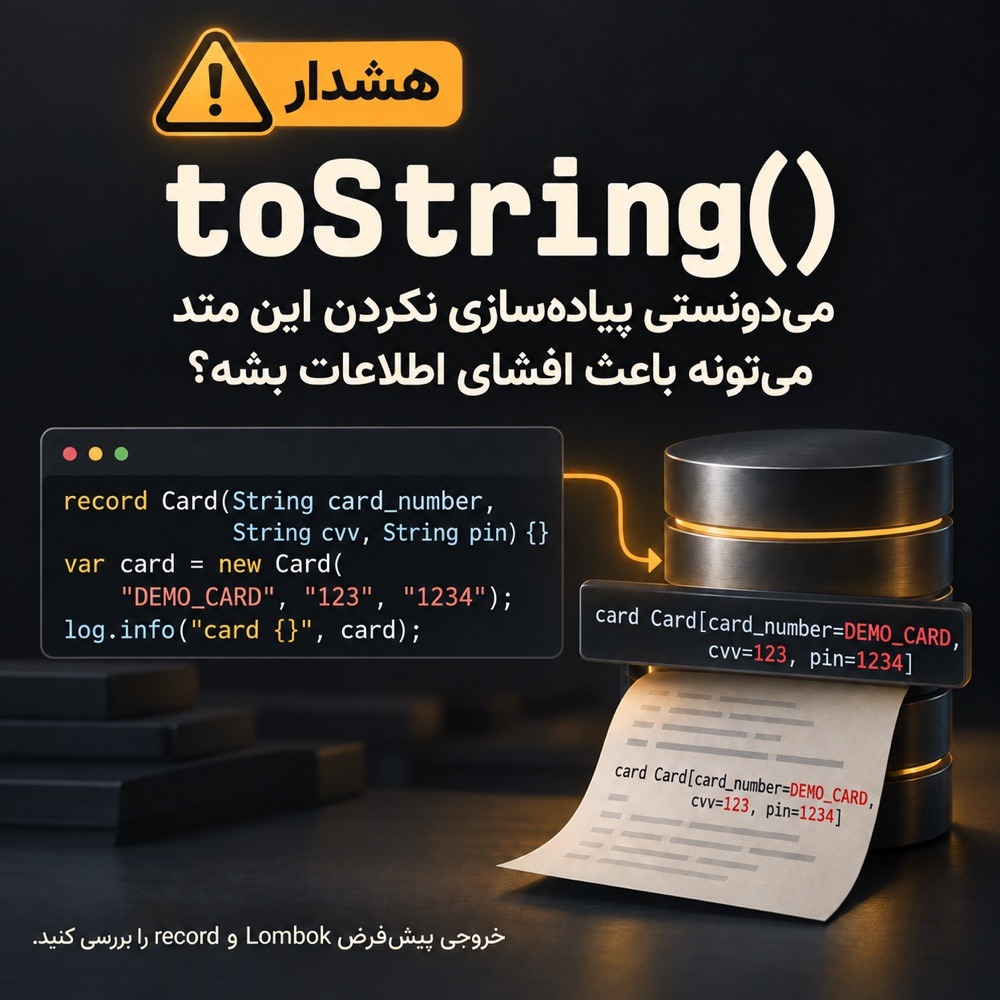

افشای اطلاعات حساس با toString()

داشتم لاگهای یه فیچر رو بررسی میکردم که چشمم به یه سری اطلاعات حساس افتاد؛ اطلاعاتی که اصلاً انتظار نداشتم توی لاگ ببینم.
رفتم سراغ کد تا ببینم داستان چیه. ردش رو گرفتم و رسیدم به لاگکردن یه آبجکت؛ یه چیزی شبیه این:
log.info("request {}", request)دیدم برای اون رکورد، toString() اختصاصی ننوشته بودم و داشتم از خروجی پیشفرض استفاده میکردم. هر بار که آبجکت رو لاگ میکردم، مقدار تکتک فیلدهاش هم وارد لاگ میشد.
بعد رفتم سراغ کلاسهایی که با Lombok نوشته بودم. اونجا هم @Data خودش toString() میسازه. یعنی ممکن بود بدون اینکه مستقیم اسم یه فیلد حساس رو توی لاگ آورده باشم، مقدارش رو با لاگکردن کل آبجکت چاپ کنم.
همین شد که بررسی رو گسترش دادم و رفتم سراغ همهٔ کلاسهایی که ذخیره یا لاگ میشن.
حجم اصلاحات بیشتر از چیزی بود که انتظار داشتم. نمیتونم آمارش رو بگم، ولی پیشنهاد میکنم شما هم یه بار این مورد رو توی کدبیس خودتون بررسی کنید.
از اون موقع، وقتی کد ریویو میکنم، حواسم به خروجی toString() هم هست. دیگه برام فقط یه متد کمکی نیست؛ خروجیش ممکنه بره توی لاگ و حتی توی دیتابیس ذخیره بشه.
سعی میکنم:
- فقط شناسههای داخلی غیرحساس و وضعیتها رو توی خروجی نگه دارم.
- اطلاعات شخصی و مالی رو حذف یا ماسک کنم.
- سکرتها رو اصلاً چاپ نکنم.
به نظرم یه چک خودکار هم کمک میکنه با اضافهشدن کلاسهای جدید، دوباره به همین مشکل نخورم.